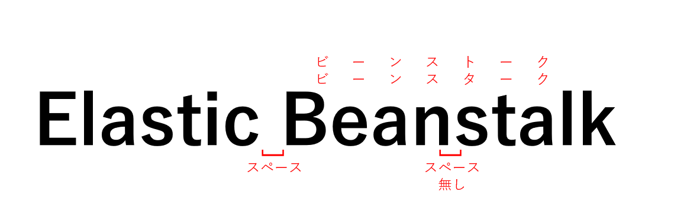

AWS Elastic Beanstalkの殴り書きメモ
はじめに

ついつい、「ElasticBeanStalk」とか「Elastic Bean Stalk」とか書きがちなのでまずはそこから。
殴り書きメモ
-
定番構成の構築・アプリデプロイの自動化サービス
-
構成要素
- アプリケーション
- トップレベルの論理単位
- バージョン、環境、環境設定が含まれる
- バージョン
- デプロイ可能なコード
- S3上でのバージョン管理
- 異なる環境に異なるバージョンをデプロイ可能
- 環境
- 各環境に応じて構築されるインフラ環境
- バージョン（ソースコード）をデプロイ
- 例：Webサーバ環境：ELB+EC2（コードがデプロイされる）
- 環境設定
- 環境に関連するリソースの動作を定義する設定パラメータ
- 例：EC2のインスタンスタイプ、Auto Scalingの設定等
- 環境に関連するリソースの動作を定義する設定パラメータ
- アプリケーション
-
環境のタイプ
- ロードバランシング環境、Auto Scaling環境
- スケーラブルなウェブアプリケーションを実行
- 高い可用性と伸縮自在性を兼ね備えた構成
- Webサーバ環境：ELB+Auto Scaling
- ワーカー環境：SQS+Auto Scaling
- スケーラブルなウェブアプリケーションを実行
- シングルインスタンス環境
- バッチアプリケーションの実行環境として
- EC2 1台構成（Auto Scaling Max1台、Min1台）
- バッチアプリケーションの実行環境として
- ロードバランシング環境、Auto Scaling環境
-
EB CLI
-
インストール
[ec2-user@bastin ~]$ sudo pip3 install --upgrade awsebcli WARNING: pip is being invoked by an old script wrapper. This will fail in a future version of pip. Please see https://github.com/pypa/pip/issues/5599 for advice on fixing the underlying issue. To avoid this problem you can invoke Python with '-m pip' instead of running pip directly. Collecting awsebcli Downloading awsebcli-3.19.2.tar.gz (249 kB) |████████████████████████████████| 249 kB 14.3 MB/s Collecting botocore<1.20.0,>=1.19.0 -
サンプルコードのダウンロード
[ec2-user@bastin ~]$ git clone https://github.com/aws-samples/eb-node-express-sample.git Cloning into 'eb-node-express-sample'... remote: Enumerating objects: 8, done. remote: Counting objects: 100% (8/8), done. remote: Compressing objects: 100% (7/7), done. remote: Total 111 (delta 0), reused 2 (delta 0), pack-reused 103 Receiving objects: 100% (111/111), 269.62 KiB | 496.00 KiB/s, done. Resolving deltas: 100% (34/34), done. -
Elastic Beanstalkアプリケーションの作成
[ec2-user@bastin eb-node-express-sample]$ eb init Select a default region 1) us-east-1 : US East (N. Virginia) 2) us-west-1 : US West (N. California) 3) us-west-2 : US West (Oregon) 4) eu-west-1 : EU (Ireland) 5) eu-central-1 : EU (Frankfurt) 6) ap-south-1 : Asia Pacific (Mumbai) 7) ap-southeast-1 : Asia Pacific (Singapore) 8) ap-southeast-2 : Asia Pacific (Sydney) 9) ap-northeast-1 : Asia Pacific (Tokyo) 10) ap-northeast-2 : Asia Pacific (Seoul) 11) sa-east-1 : South America (Sao Paulo) 12) cn-north-1 : China (Beijing) 13) cn-northwest-1 : China (Ningxia) 14) us-east-2 : US East (Ohio) 15) ca-central-1 : Canada (Central) 16) eu-west-2 : EU (London) 17) eu-west-3 : EU (Paris) 18) eu-north-1 : EU (Stockholm) 19) eu-south-1 : EU (Milano) 20) ap-east-1 : Asia Pacific (Hong Kong) 21) me-south-1 : Middle East (Bahrain) 22) af-south-1 : Africa (Cape Town) (default is 3): 9 Select an application to use 1) bel-dev-beanstalk-test 2) [ Create new Application ] (default is 2): Enter Application Name (default is "eb-node-express-sample"): Application eb-node-express-sample has been created. It appears you are using Node.js. Is this correct? (Y/n): y Select a platform branch. 1) Node.js 12 running on 64bit Amazon Linux 2 2) Node.js 10 running on 64bit Amazon Linux 2 3) Node.js running on 64bit Amazon Linux (default is 1): Do you wish to continue with CodeCommit? (Y/n): n Do you want to set up SSH for your instances? (Y/n): y Select a keypair. 1) awskeypair 2) DMSHandson58 3) [ Create new KeyPair ] (default is 2): 1 [ec2-user@bastin eb-node-express-sample]$ -
環境作成、コードのデプロイ
[ec2-user@bastin eb-node-express-sample]$ eb create Enter Environment Name (default is eb-node-express-sample-dev): Enter DNS CNAME prefix (default is eb-node-express-sample-dev): Select a load balancer type 1) classic 2) application 3) network (default is 2): Would you like to enable Spot Fleet requests for this environment? (y/N): N ～省略～ -
デプロイメント
デプロイポリシーと設定 - AWS Elastic Beanstalk https://docs.aws.amazon.com/ja_jp/elasticbeanstalk/latest/dg/using-features.rolling-version-deploy.html
-
In Place Deployment(Rolling Deploy)
- インスタンスは現行環境のものを利用して、新しいリビジョンのコードを反映
- at once
- Rolling
- インスタンスは現行環境のものを利用して、新しいリビジョンのコードを反映
-
Blue/Green Deployment
- 新しいリビジョンのコードを新しいインスタンスに反映させ、インスタンスごと入れ替える
-
デプロイ設定
- バッチタイプ：一度にデプロイを反映させる台数
- 割合、固定
- バッチサイズ：各バッチにデプロイするインスタンスの数、または割合
- バッチタイプ：一度にデプロイを反映させる台数
-
URL Swap
-
あるバージョンのアプリケーションをデプロイ後、新しいバージョンのアプリケーションを違う環境(Environment)としてデプロイ。CNAMEを切り替えて、Blue/Green Deploymentを実現する
Elastic BeanstalkのCNAME Swapを試してみる | Developers.IO https://dev.classmethod.jp/articles/beanstalk-cname-swap/
-
-
Route53の加重ラウンドロビン
- 新バージョンのコードを少しずつ試すことが可能
-
-
環境設定のカスタマイズ
- 環境作成時にオプションを直接指定
- 保存済み設定
- S3に設定ファイルとして保存
- eb config save
- S3に設定ファイルとして保存
- .ebextensions
- リソースのカスタマイズが可能
- カスタム環境変数
- ソフトウェアインストール
- ソフトウェアの実行
- デフォルトにはないAWSリソースの作成
- リソースのカスタマイズが可能
-
モニタリング
- 基本ヘルスレポート
- 環境のヘルスステータス
- ELBのヘルスチェック
- CloudWatchメトリクス
- 拡張ヘルスレポート
- OSレベルのメトリクス
- アプリケーションレベルのメトリクス
- 基本ヘルスレポート
-
関連しているかもしれない記事
- PostgreSQLでNOLOGGINGテーブル（UNLOGGED）に大量データをロード
- AWS Systems Managerの殴り書きメモ
- AuroraとNeptuneのメンテナンス（パッチ適用）について
- RDSとAuroraで変更を検討するパラメータ(PostgreSQL)
- RDSとAurora PostgreSQLで変更不可なパラメータ一覧